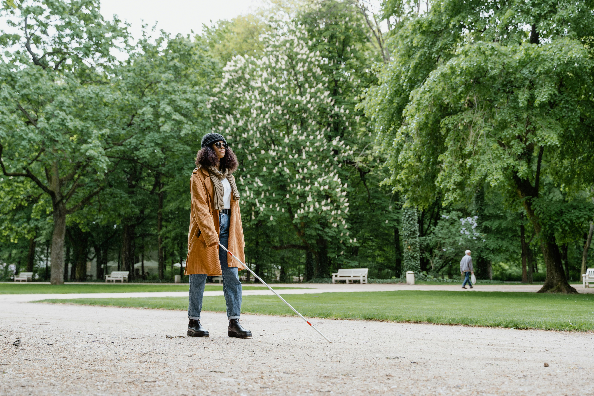

<section style="max-width: 900px; margin: 60px auto; padding: 40px; background-color: #FFFCF5; border-radius: 16px;">
  <div style="display: flex; flex-direction: column; gap: 24px; color: #333; line-height: 1.8;">
    

    <h2 style="font-size: 28px; text-align: center; color: #005599;">視障重建訓練服務</h2>

    <p><strong>🌟 從無助到自主，看不見的世界也能充滿可能</strong></p>
    <p>當視力改變，生活也面臨巨大挑戰—從穿衣、做飯，到走出家門、使用科技。<br>
    中華啟明重建協會提供多元訓練課程，協助視障朋友重建獨立生活能力、資訊應用能力與行動力，逐步邁向自主與自信。</p>

    <p><strong>🧩 服務課程內容</strong></p>
    <ol>
      <li><strong>生活自理訓練：</strong>學習日常物品辨識、餐飲與家務操作、金錢管理與衛生穿著技巧，重拾生活節奏與自理能力。</li>
      <li><strong>定向行動訓練：</strong>由專業老師指導手杖使用、環境導航與公共交通搭乘技巧，建立安全感與外出信心。</li>
      <li><strong>點字與文書訓練：</strong>學習點字書寫與閱讀，培養日常紀錄與資訊接收能力，為未來學習與職訓奠定基礎。</li>
      <li><strong>盲用電腦與資訊技能：</strong>掌握螢幕報讀軟體（如 NVDA、JAWS）、文書處理、網路應用與通訊軟體操作，提升資訊獨立力與競爭力。</li>
    </ol>

    <p><strong>🎯 服務對象</strong><br>
    視力退化、低視能或失明者<br>
    正在適應視力變化並希望重建生活者<br>
    有志參與職訓、就業或社會活動者<br>
    家中有視障親人，欲學習協助與引導技巧者</p>

    <p><strong>✅ 小班或一對一教學，強調實作與個別化支持</strong><br>
    ✅ 結合心理陪伴，助您自信面對每個挑戰</p>

    <p>
    📞 洽詢專線｜04-2203-5858<br>
    📧 Email｜eyes22035858@hotmail.com<br>
    🏢 地址｜台中市北區公園路184號B1
    </p>

    <p style="color: #c4302b; font-weight: bold;">❤️ 我們相信，每一次學習，都是邁向自立的希望。</p>
  </div>
</section>
